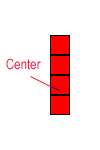
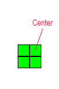
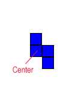
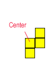
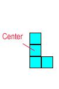
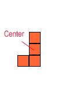
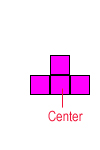

|
Project 2 : Tetris
Assigned : Mar 8
Due : Mar 29
|
|
|
|
Quick Links
- Displaying X applications to PC running Xwin32
- Sample solution
(only runs on Linux!)
- background image
(download this image in the same directory of the sample solution before running)
- Marking Scheme
Project Description
Preamble
The following idea on pair programming on project #2 was adopted from a similar course in Princeton where students may work in pairs in programming assignments
Pair programming. For this assignment you may work jointly with one partner. In such cases, both partners are responsible for jointly contributing to and understanding all parts of the completed assignment. In this case, only one partner submits the code and analysis; both partners receive the same grade.
What is pair programming? Pair programming "is a practice in which two programmers work side-by-side at one computer, continuously collaborating on the same design, algorithm, code, or test." One partner is driving (designing and typing the code) while the other is navigating (reviewing the work, identifying bugs, and asking questions). The two partners switch roles every 30-40 minutes, and on demand, brainstorm. Before pair programming, you must read the article All I really need to know about pair programming I learned in kindergarten.
Introduction
In this assignment, you will implement a well known game
- Tetris. You have to use object-oriented technique and Qt tool kit to develop
this game. If you didn't play this game, you should play it before you start
implementation. This can help you a lot. The executable file for Solaris machine
is located here ->Tetris (See
"Requirement"
for how to control).
Let's play it !!
Anatomy
The interface of Tetris is very simple (see the following
figure):
It usually contains a game board, preview
window, level display and score display.
Game board is the place that you play. You
can consider the game board as an invisible grid. When the game start, a block
will be generated on the top of the game board. The block will fall continuously
until it reaches the ground or touches any object on the game board. Then the
block will be fixed on the game board. A new block will be generated at the top
of the game board and the process continue. During falling, you can move
the falling block left, right or down. You can also rotate the block in
clockwise or anti-clockwise direction. If a row of the game board are completely
occupied by the components (squares) of the fixed game boards, the row will
disappear, your score will increased and everything above the disappeared row
will be shift down. The score gain from disappeared rows depends on the decision
of the developer. The given example
uses this equation [ mark = 10 * combo * combo ]. ( combo = number of rows
disappeared for a single block ). When your score exceed certain limit, the
level will increase. Level control the speed of block falling (a block falls
faster if level is higher). In the given example, the level will increase by 1
for every 100 mark. And, the falling speed equals to [1000ms - (level -1)*100]
per grid square. The maximum level is 10.
Block Types: There are 7 types of block. All
of them contains 4 squares. They are listed as follow. Center
is the center of rotation.
| Type 1 |
Type 2 |
Type 3 |
Type 4 |
Type 5 |
Type 6 |
Type 7 |
|  |
 |
 |
 |
 |
 |
 |
Preview window displays the block that will
be generated next.
Level display displays the current level.
As mentioned in the subsection Game board, level control the speed of the
falling block.
Score display displays the current score of
the player.
Requirement
1) The game interface should at least contains a Game
board.
2) The size of the Game board is 10 square x 20 square.
It is empty just before the game start.
3) You have to load a bitmap as the background of the
game board (just like the given example). If you don't have any idea, you can
use the image of the given example. The suggest image size is 200 x 400 pixel
and the square size is 20x20 pixel.
4) You must follow the following key press event (this is
the key press event of the given example):
|
arrow(up) |
Start game |
|
arrow(left) |
Move block left |
|
arrow(right) |
Move block right |
|
arrow(down) |
Move block down |
|
Z |
Rotate block in clockwise direction |
|
X |
Rotate block in anti-clockwise direction |
5) When either the top or the second top row of the game
board is not empty, the game end. That is, the state go back to the the state
that just before you start the game. You can either repaint or do not repaint
the game board.
6) You have to implement all the 7 types of blocks. The
center of rotation have to be correct.
7) The type of a new block have to be decided
randomly.
8) The stating position of a block is at the middle of
the third top row. Suppose the width of a row is A, the x coordinate of the
center of the new block is either floor[A/2] or ceiling[A/2].
9) Your game at least has level 1. That is, the first
level is playable. One suggested falling speed is [1000ms - (level -1)*100] per
grid square.
10) Since you may not implement the level/score display,
you may not keep the score of the player.
11) IMPORTANT: The game play is the same as the
given example! In other word, your game should be implemented correctly!
Notes
1) Try to separate the game core components from the UI.
2) Remember to initialize the random seed. (i.e. call
srand() )
3) You can decide the appearance of the squares. So, you
can use a bitmap to represent a square. One suggestion is to draw the squares by
QPainter::fillRect().
4) Thoroughly test and fix all the bugs before submission
Grading Scheme
A main objective of this course is to learn and practise
good design principles so that you can eventually write very large programs
comfortably and professionally. As such, you should not just turn
in a program that works. You are expected to have a good design too
so that your program is comprehensible and can be extended easily in case
the specification changes later. Whether you like it or not, it is
a fact in life that user requirements keep changing while a program is
being developed. Your design should be flexible enough to cater for
such possibilities. You should describe your design clearly in a
separate file, named README.txt.
As is always the case, you should use meaningful
identifier names in your program so that other people can understand your
code easily. You are also expected to break your program into functionally
distinct pieces kept in different files, with the C++ source files compiled
separately. Brief yet informative comments should be added throughout
the program to improve its comprehensibility.
The grading scheme is as follows:
-
Program correctness in satisfying specification (70%)
-
Object-oriented programming style and use of separate
compilation (15%)
-
Documentation and comprehensibility (15%)
What to submit
- All the source code (.cpp and .h), but not the object code or
executable
- Makefile and README.txt
- Zip (1) and (2) inside a file called tetris.zip, and upload
the file to CASS before 23:59:00 on the due date.
Warning: If your submitted project fails to compile,
your assignment will be treated as late (where late policy applies).
 |
{kind=link}